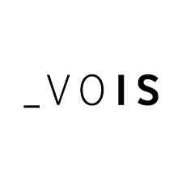

Krisztina Biró
Email: krisztinabiro.82@gmail.com | Phone: +36 7090 53455 | Location: Stockholm, Sweden
I am pursuing a Master’s Degree in Interactive Media Technology at KTH in Stockholm.
With hands-on experience in UX/UI design, I am eager to further develop my skills and immerse myself
in this dynamic and evolving field. My goal is to create impactful solutions that foster inclusivity and simplify
life for people from all backgrounds.
Work Experience
UX/UI Designer Intern
SmartX Solutions
July 2023 - September 2023
SmartX is leading IT company, based in Hungary, delivering middleware and frontend solutions for the financial industry.I was chosen for their junior UX designer programme from a pool of applicants after successfully navigating through multiple rounds of assessments. Throughout this programme, I individually handled the UX/UI aspect of the project, albeit with the support of my senior colleagues. This experience not only provided me with valuable theoretical and practical knowledge but also enhanced my management and teamwork skills.
Web Content Specialist

Vodafone Intelligent Solutions
October 2022 - April 2023
During the third year of my studies, I undertook a part-time position at VOIS, which is responsible for delivering digital and marketing solutions for Vodafone. In this role, I designed user journeys, conducted user interviews, and analyzed testing data to enhance digital products. I collaborated with senior colleagues on product strategies and gained foundational experience in JavaScript, HTML, CSS, and SEO.Search Engine Evaluator
TELUS International AI Data Solutions
April 2022 -
I work remotely and flexibly as a freelance search engine evaluator, where I assess the relevance and quality of search engine results. My role involves analysing user behaviour and search patterns to improve search algorithms and understand user expectations for specific queries or situations.e theoretical and practical knowledge but also enhanced my management and teamwork skills.Sales & front door
Déryné Bistro
June 2020 - July 2012
Déryné Bistro is one of Budapest's premier high-end restaurants, where I mastered the art of hospitality, learning that every detail counts. My role involved managing the reservation system, organizing partner events, overseeing the restaurant’s social media, and assisting with sales tasks during the close-down. My strong performance earned me recognition, leading to increased responsibilities, including supervising other employees.Education
Master's in Interactive Media Technology
KTH Royal Institute of Technology, Stockholm
2023 - Present
Bachelor's in Communication and Media Science
Eötvös Loránd University
2020 - 2023
Bachelor’s Degree in Chinese Language and Culture
Eötvös Loránd University
2021 - 2024
Skills
- UX/UI Design
- HTML, CSS, JavaScript
- User Research & Testing
- SEO